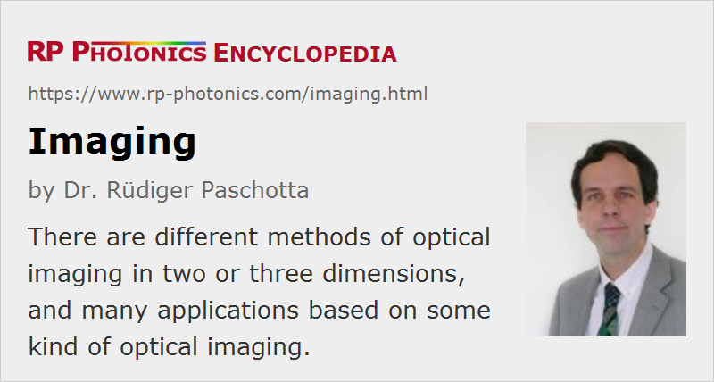

Imaging
Definition: mapping objects points to image points; applications involving such methods
More specific terms: imaging with a lens, spectral imaging, multispectral imaging, hyperspectral imaging, thermal imaging
German: Abbildung
Categories: general optics, vision, displays and imaging, methods
How to cite the article; suggest additional literature
Author: Dr. Rüdiger Paschotta
The term imaging can both denote certain methods and applications which involve such matters.
Optical Imaging Methods
The generation of an optical image often means that light received from points of an object is sent to points on some image plane. More generally, imaging may mean that points in a certain plane (containing any objects or not) are mapped to points in some other plane. In some cases, one does three-dimensional imaging, collecting information on object points not only in one plane.
The simplest kind of optical imaging is achieved with the pinhole camera (camera obscura), requiring only a pinhole and no other optical elements like lenses or mirrors. Because that operation principle is rather limiting, particularly because of a trade-off between resolution and light collection efficiency, other imaging methods are applied in most cases.
The most common principle of optical imaging is that with a single lens, or similarly with a multiple-lens system, also called an objective. This is explained in the article on imaging with a lens.
Some imaging devices work by scanning objects point by point and assembling those data to complete images. In some cases, one does a line scan in one dimension only.
Some imaging methods are suitable for acquiring three-dimensional images. This is possible with holography and with some scanning methods such as optical coherence tomography.
The resolution achievable with optical imaging is in most cases limited by diffraction to the order of half the optical wavelength. However, there are a couple of methods for super-resolution imaging beyond the diffraction limit. For example, there are near-field microscopy methods and certain methods of fluorescence microscopy.
In some cases, imaging is not done with traditional optics like lenses, but based on fiber optics. For example, there are imaging fiber bundles and fiber-optic plates (faceplates) which can produce one-to-one image transfers, sometimes also including some magnification when using tapered structures.
Imaging is not only possible with visible light, but also with electromagnetic radiation and other frequency regions and with other types of radiation:
- Infrared light is widely used for imaging; there are special infrared cameras, e.g. for thermal imaging and night vision.
- In some cases, ultraviolet light is used, for example in the context of laser lithography.
- There are various methods of X-ray imaging. A difficulty in that domain is that it is hard to produce effective mirrors, except for glazing incidence. For example, Wolter telescopes are used in space for X-ray observation of stars.
- Terahertz imaging exploits the penetration of terahertz radiation through substances.
If a couple of spectral bands is used, the term multispectral imaging is common. If a contiguous wavelength band is covered with substantial resolution, one speaks about hyperspectral imaging.
Imaging Applications
Some kind of optical imaging is required for a wide range of applications. Some important example cases are briefly explaining the following:
- In a photo camera, one uses a photographic objective for imaging objects either onto a photographic film or an electronic image sensor. There is also a wide range of other types of cameras, including video cameras for moving images.
- A microscope can image tiny objects to the human eye or into a microscope camera.
- For small magnifications, loupes and magnifying glasses are often sufficient.
- Various kinds of telescopes, including binoculars and monoculars, can be used for viewing distant objects.
- Endoscopes, borescopes, fiberscopes and videoscopes are used for viewing objects through rigid or flexible tubes.
- Infrared viewers can be used to see based on infrared light.
- Projectors are imaging devices which also contain a light source for elimination of the object. For example, overhead projectors can project images from slides with large magnification onto screens, and laser projectors can do the same for digital images.
- Various types of machine vision devices provide images used by machines, for example autonomous vehicles.
- Optical coherence tomography (OCT) is a scanning method for obtaining microscopic images. Some types of laser microscopes also acquire images by scanning objects.
- Optical profilometers acquire high-resolution images revealing surface profiles.
- In lithography, for example for the fabrication of computer chips, complicated fine structures are imaged onto wavers. Here, particularly short wavelengths are required for very high spatial resolution.
- Terahertz imaging can be used for security screening, non-destructive industrial inspection and checking of agricultural products.
Suppliers
The RP Photonics Buyer's Guide contains 30 suppliers for imaging instruments.
Questions and Comments from Users
Here you can submit questions and comments. As far as they get accepted by the author, they will appear above this paragraph together with the author’s answer. The author will decide on acceptance based on certain criteria. Essentially, the issue must be of sufficiently broad interest.
Please do not enter personal data here; we would otherwise delete it soon. (See also our privacy declaration.) If you wish to receive personal feedback or consultancy from the author, please contact him e.g. via e-mail.
By submitting the information, you give your consent to the potential publication of your inputs on our website according to our rules. (If you later retract your consent, we will delete those inputs.) As your inputs are first reviewed by the author, they may be published with some delay.
See also: imaging with a lens, spectral imaging, image sensors, fiber-optic plates, cameras, photo cameras, microscopes, telescopes, loupes, magnifying glasses, magnification, optical aberrations
and other articles in the categories general optics, vision, displays and imaging, methods
|  |
If you like this page, please share the link with your friends and colleagues, e.g. via social media:
These sharing buttons are implemented in a privacy-friendly way!